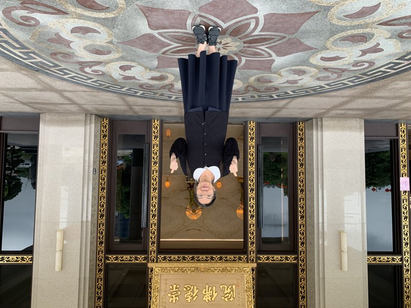
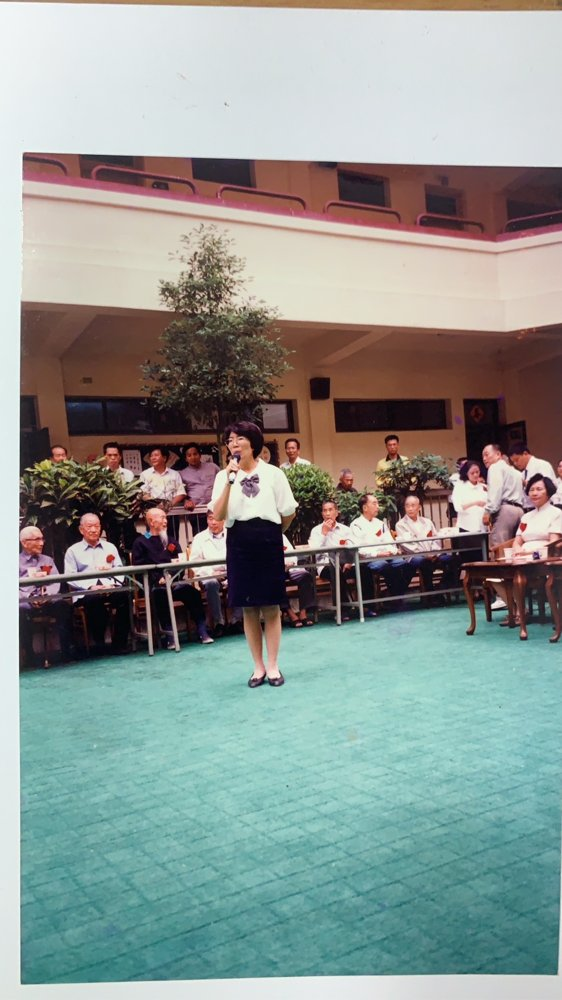

毓德謝生莉心得分享
後學謝生莉是民國69年2月13日在中華路舊正德佛堂求道，民國69年5月1日～3日到雲林大廟開三天法會，民國73年至崇修堂參加甲子年懺悔班，民國74年參加進修班並立壇主愿，民國80年12月25日設立家庭佛堂，民國88年參加道場在台北瑩德舉辦的超拔法會，超拔了後學的婆婆。民國93年8月參加道場舉辦之崇德光慧讀經教育師資培訓研習，然後投入讀經班，一直到民國114年3月小朋友太少而停止。民國98年1月第一次跟隨李素鳳點傳師到越南辦道，民國106年因黃老點傳師需至越南辦道及操持法會，後學前往柬埔寨佛堂協助張桂香講師教中文。同年與李素鳳點傳、蔡雪琴點傳到中國福建石獅辦道，又與李點傳及鄧盛有講師到中國廣東東莞、深圳，民國106年12月30日毓德公共佛堂成立，民國107年與徐文讓點傳師、鄧盛有講師到中國四川陳姐家辦道，民國107年1月開始接受肺腺癌治療。
後學感謝天恩師德、感謝彌勒祖師慈悲
感謝白水聖帝及不休息菩薩聖靈護佑
各位點傳師慈悲、引保師成全，壇主講師愛護
讓後學可以在道場學習。
老前人諄諄教誨：修天道由人道做起，人道盡天道不遠。
前人教導德行的涵養，內五德：溫、良、恭、儉、讓。外五德：恭、寬、信、敏、惠。三施：財施、法施、無畏施。修者，改也。修道要改毛病、去脾氣。向聖賢學習，以聖賢為師。曾子的吾日三省吾身、顏回的得一善，則拳拳服膺而弗失之矣。修道要三不離，不離前賢、不離佛堂、不離聖訓經典。
回想後學求道時還沒有結婚，對道也不認識，只因引保師許淑惠講師說要帶後學去拜拜，後學就上了法船，萬分感謝許講師。當初後學父親還怕後學被騙，我們張兄自告奮勇要保護後學陪後學前往，當天我們一起求了道，看到所有的人都是規規矩矩很有禮貌，有了很好的印象。
後學陸陸續續接受了道場的培育與教育，雖然當時孩子們還小，後學也帶她們一起去上課，佛堂的前賢還幫我們照顧，真的很感恩。
民國87年8月後學與李點傳師一同要去花蓮玉里，參加林桂鳳與葉成春講師家鄉的豐年祭並成全家人與道親，大概4天左右。我們剛回新竹第二天就發生大女兒可珍突然頭暈及不斷的嘔吐的情況，到醫院時醫生覺得她意識不清，就問有沒有摔傷、跌倒或被蚊蟲咬呢?當時流行登革熱，但是都沒有呀!後學很緊張很害怕打電話給學文大仙(黃博仁點傳師）他老建議後學轉到林口長庚醫院，感謝天恩師德，經過9天的治療病情穩定出院，但是她是先天性的疾病還需後續的治療。沒想到以為較穩定時88年1月又出血一次，後學花了很多時間及心力陪伴她，她也清口了，88年她去新莊參加年青少年法會 小仙童大皮皮臨壇，非常慈悲，請辦事人員把毛巾一半沾水，一半乾的，幫她擦臉、擦身體，然後說要擔待、擔待(台語）94年7月大學畢業又出血一次，後學流著眼淚祈求活佛老師慈悲撥轉，終於化險為夷。所以這個一個很大的考驗。
103年後學退休了，後學想跟著點傳師到國外學習參辦，因此才有機會認識國外的兄弟姊妹，看到越南的前賢對道的向心力、對天命的護持、對點傳師的尊重，內心非常的感動。106年12月30日，我們從正德母壇分出來成立毓德佛堂，當時我們有三家家庭佛堂，有後學、朱學強講師及劉守宗講師，還有許多講師及壇主共13位，都是一時之選。我們共同為開創毓德大家庭的道務而奮發努力，時光荏苒、光陰如梭一轉眼就過了8年，目前毓德在三位義字班帶領之下，道務張謹柔講師、班務劉守宗講師、成全蔡錦玲都有很大的進步，未來我們仍然會繼續努力，方不負天恩師德。